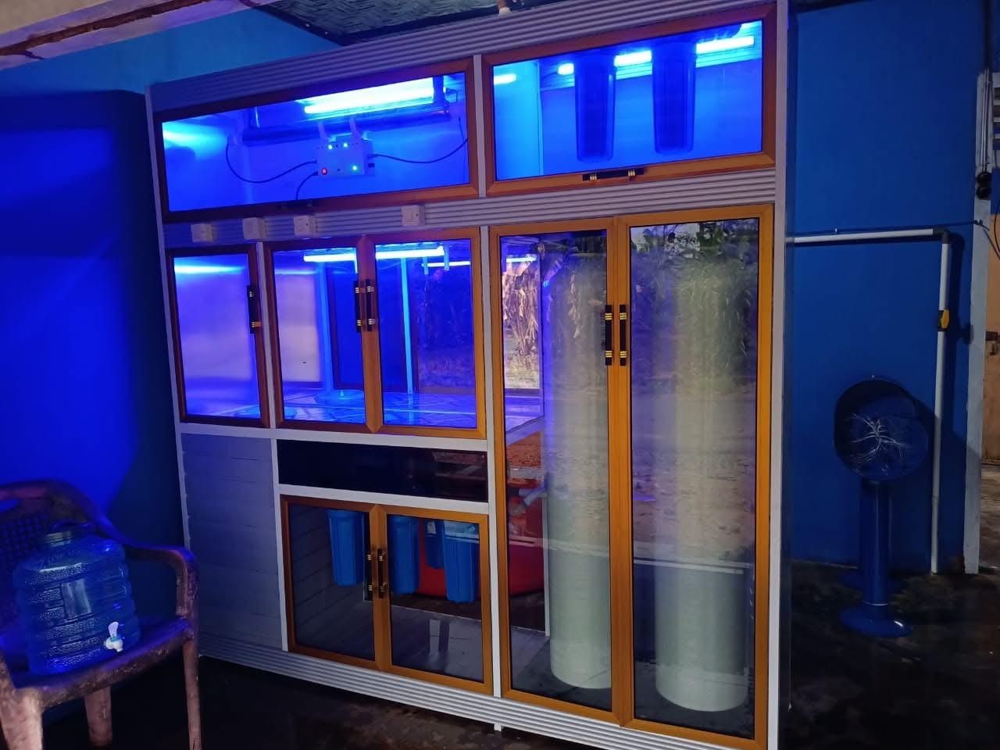
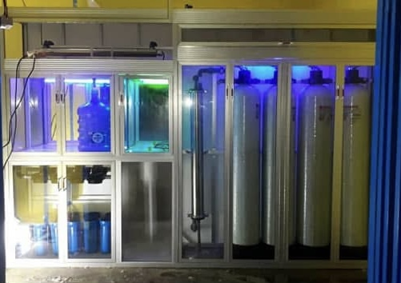
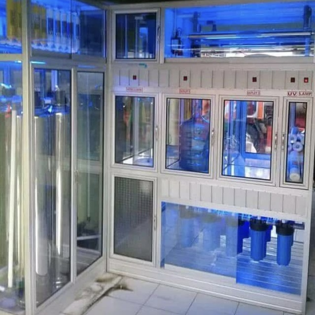
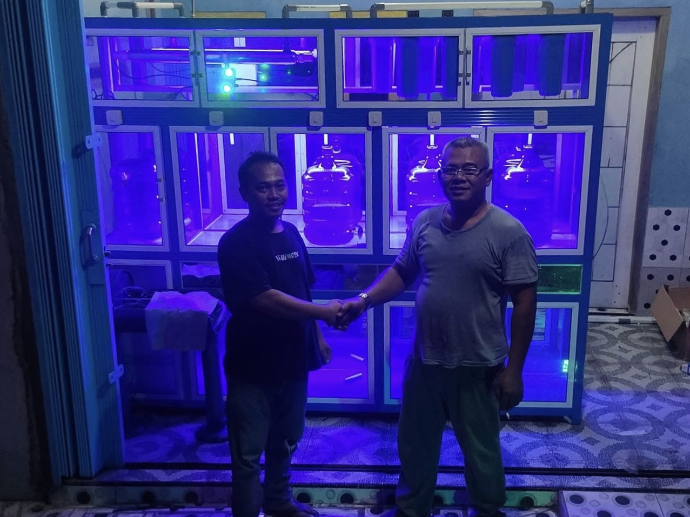

Katalog Paket Depot Air Minum (DAMIU)
Pilih paket instalasi mesin depot air minum sesuai dengan spesifikasi dan anggaran bisnis Anda. Dapatkan penawaran terbaik di Lampung.
1. Paket Air Mineral
Mesin penyaring standar untuk memproduksi air mineral segar yang sehat.

Paket Mineral Ekonomis
Rp 15 - 20 Juta
Sistem penyaringan dasar dengan 2 Tabung Media. Sangat cocok untuk pemula.
Lihat Detail Spesifikasi
Paket Mineral Premium
Rp 25 - 30 Juta
Penyaringan ekstra (3 Tabung Media) untuk air yang rentan kuning atau mengandung besi.
Lihat Detail Spesifikasi
Paket Mineral Sultan
Rp 35 - 45 Juta
Filtrasi kasta tertinggi (5 Tabung Media) untuk air mineral murni berkualitas elit.
Lihat Detail Spesifikasi2. Paket Kombinasi (Mineral + RO)
Satu etalase untuk memproduksi dua jenis air. Raih potensi keuntungan maksimal.
Kombinasi RO 200 GPD
Tambah mesin RO kapasitas 40 Galon/Hari. Lengkap dengan toren RO Stainless 1 Kubik.
Lihat Detail SpesifikasiKombinasi RO 500 GPD
Tambah mesin RO kapasitas 80 Galon/Hari. Lengkap dengan toren RO Stainless 1 Kubik.
Lihat Detail SpesifikasiKombinasi RO 1000 GPD
Mesin RO raksasa kapasitas 200 Galon/Hari. Toren RO Stainless 3 Kubik (Heavy Duty).
Lihat Detail Spesifikasi3. Paket Khusus RO Saja
Khusus memproduksi air Reverse Osmosis tingkat tinggi tanpa mineral.

Khusus RO 200 GPD
Rp 20.000.000
Fokus memproduksi Air RO (40 Galon/hari) dengan penampungan Toren Stainless 1 Kubik.
Lihat Detail SpesifikasiKhusus RO 500 GPD
Rp 30.000.000
Fokus memproduksi Air RO (80 Galon/hari) dengan penampungan Toren Stainless 1 Kubik.
Lihat Detail SpesifikasiKhusus RO 1000 GPD
Rp 40.000.000
Mesin pabrik RO (200 Galon/hari) dengan penampungan Toren Stainless 3 Kubik.
Lihat Detail Spesifikasi4. Paket Custom & Proyek
Rakitan mesin, jumlah tabung, dan ukuran etalase disesuaikan dengan kebutuhan unik Anda.

Paket Custom Proyek
Penawaran Khusus
Konsultasikan kebutuhan spesifikasi khusus, sistem filtrasi industri, atau etalase custom Anda langsung bersama teknisi kami.
Konsultasi via WhatsApp